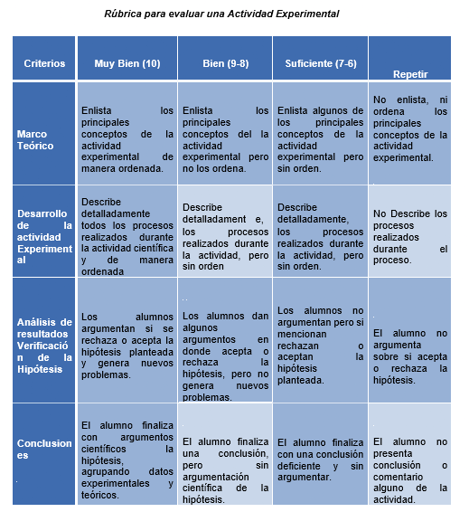

Continuamos
6. ANÁLISIS, CONTRASTACIÓN, EXPLICACIÓN E INTERPRETACION DE OBSERVACIONES, RESULTADOS Y/O EVIDENCIAS EXPERIMENTALES
- Responder a las preguntas planteadas con base en las evidencias experimentales.
- Confirmar o rechazar las hipótesis iniciales, argumentando con datos observados.
- Generar nuevas preguntas que puedan orientar a futuras investigaciones.
7. ELABORACIÓN DE CONCLUSIONES
- Redactar conclusiones que integren la pregunta problema, hipótesis y resultados obtenidos.
- Fundamentar con lenguaje científico claro y con apoyo en la observación de las preparaciones.
8.¿QUÉ APRENDÍ?
- Expresar los conocimientos adquiridos (ej. tinción de Gram, uso del microscopio).
- Reconocer las habilidades desarrolladas (técnica de siembra, bioseguridad, análisis crítico).
- Valorar las actitudes logradas (trabajo en equipo, cuidado del material biológico, responsabilidad en el laboratorio).

9. REFERENCIAS CONSULTADAS. (BIBLIOGRÁFICAS, HEMEROGRÁFICAS O CIBERGRÁFICAS
- Para reportar la bibliografía consultada debes utilizar el formato APA para citar las referencias consultadas en la elaboración del reporte de la actividad experimental.
- Atlas, R. M. (2010). Handbook of Microbiological Media (4th ed.). CRC Press.
- Black, J. G., & Black, L. J. (2015). Microbiología. Principios y exploraciones (9a ed.). McGraw-Hill Interamericana.
- Brock, T. D., Madigan, M. T., Martinko, J. M., Bender, K., Buckley, D., & Stahl, D. (2019). Biología de los microorganismos de Brock (15a ed.). Pearson Educación.
- Cappuccino, J. G., & Welsh, C. (2017). Microbiology: A Laboratory Manual (11th ed.). Pearson.
- Colegio de Ciencias y Humanidades (CCH). (2024). Programas de Estudio 2024. Biología I. Universidad Nacional Autónoma de México.
- Forbes, B. A., Sahm, D. F., & Weissfeld, A. S. (2016). Bailey & Scott. Diagnóstico microbiológico (13a ed.). Elsevier.
- Organización de las Naciones Unidas para la Educación, la Ciencia y la Cultura (UNESCO). (2022). Reimaginar juntos nuestros futuros: Un nuevo contrato social para la educación. UNESCO.
- Tortora, G. J., Funke, B. R., & Case, C. L. (2021). Introducción a la microbiología (13a ed.). Editorial Médica Panamericana.
- Universidad Nacional Autónoma de México (UNAM). (2022). Cómo incorporar la perspectiva de género en los planes y programas de estudio. CUAIEED/CIGU.
- Universidad Nacional Autónoma de México (UNAM). (2024). Modelo Educativo del Colegio de Ciencias y Humanidades. UNAM.
- U.S. National Fire Protection Association (NFPA). (2020). NFPA 704: Standard System for the Identification of the Hazards of Materials for Emergency Response. NFPA.